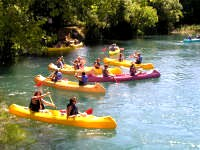
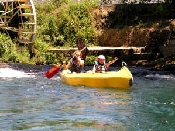

KOMARNA Sightseeing
Activities and sightseeing near Komarna in South Dalmatia

| |
| |
Canoe Safari and Family River Rafting
Canoe Safari
Crystal clear water, waterfalls, birds, fish, refreshments served halfway and the picnic lunch served at the end of the trip will make sure that you will not easily forget this day.

The Trebizat River that forms Kravica Waterfalls continues and meets the Neretva River about 15 km further down. It runs through an exciting karst area that you may experience on a Canoe safari that starts in Bozjak near Studenci just after the Kravica waterfalls and ends at the meeting point in Struge near Capljina.
The route is 11 kilometers long and runs through stunningly beautiful karst landscape formed by the river over thousands of years. The beginning of the trip is quiet and calm and towards the end when the river runs a little faster it gets a bit more exciting with a few small and fun cascades. With the help of the instructors, you will soon learn how to handle the canoes. The canoes are quit safe if you don't

do anything silly yourself. If your children are under 8 years of age they should be used to swimming. If in doubt - ask when you book. Each canoe will only take 2 persons so if you are accompanied by a child you may have to do all the paddling yourself.It is easy and quite safe even for beginners. The canoes are very stable and easy to handle.
Bring your passport, bathing suit, hat, towel and sun cream. There is a waterproof bag in each canoe to ensure that your personal belongings like a camera may stay dry throughout the trip. At the end of the trip there will be a barbecue at the place where you parked the car.
Link to website for "Adventure Trebizat" where you can read all about the canoe safari.
Meeting point for Canoe Safari. Remember your passports. Trebizat River is just inside the border in Herzegovina.
- From Medkovic drive towards Mostar and Sarajevo (road 9).
- About 3.5 km after the border station turn left in Visici.
- After 1 km you pass a bridge over Neretva. Continue 700 meters where there is a crossing.
- Follow the road to the right through Struge.
- First you pass one small bridge over a narrow stream, then after a right turn you pass the main stream of Trebizat River.
- After the second bridge turn left down a dirt road and turn left again towards the river where you find the meeting point.
- Park your car here and the guides will drive you up the river to the starting point for the canoe safari.
Family River Rafting
Family rafting on the Neretva River is an impressive adventure for everybody who loves nature. During the height of summer the river is very quiet and nothing like white-water rafting. Most will probably find it a bit dull. It starts just south of Mostar and ends 15 km later in Biletic. The boats that will take eight people each is professional rafting boats, and they are managed by professional guides and skippers that will train the crew (you!).
The equipment and safety gear is modern and the guides are old school professionals that are used to the river and know every part of it. The trip is quite safe for all ages. Even small children may participate. Besides safety equipment, each member of the crew will get an oar. In the boat, there is a waterproof bag or container for keeping cameras and other belongings dry. Bring swim suits, hats, sun cream and maybe some dry clothes you may change to at the end of the trip.
Lunch is served at a picnic spot at the end of the trip. It is not the meeting point where your car is parked so do not leave dry clothes in your car, but leave them in the bus that pick you up at the meeting point so you can change before lunch.
Meeting Point: Remember your passports. Bring swim suit, dry change of clothes in plastic bags, hats and sun cream. The rafting is on Neretva River inside Herzegovina.
- From Metkovic drive towards Mostar and Sarajevo (road 9).
- Follow the road and about 14 km. after the border station, you arrive to Pocitelj, which is very interesting in itself, but for now just pass the village and look out for the meeting point just after you pass the old houses.
- The meeting point is by Restaurant KUK.
- Park your car here and the guides will drive you up the river to the starting point for the rafting which is between the Buna River and Mostar.
- The rafting does not end here, so take what you need from your car and leave it in the bus which will meet you at the end point and bring you back to the car.
Page with coordinates for GPS and maps
Croatia holiday home sightseeing and activities from Medjugorje, Mostar and Sarajevo to Dubrovnik, Peljesac and Bosnia-Herzegovina.
Copyright - Komarna Rejser, Denmark, tel.+45 23495880